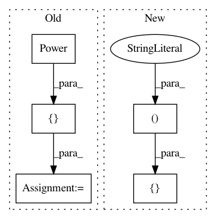

d98f74b23e3830658aff386cabd2966195250aa9,nilmtk/tests/generate_test_data.py,,,#,77
Before Change
N_METERS*N_MEASUREMENTS_PER_METER))
return pd.DataFrame(data=data, index=rng, columns=columns, dtype=np.float32)
MEASUREMENTS = [Power("active"), Energy("reactive"), Voltage()]
def create_random_df():
N_PERIODS = 1E4
After Change
N_METERS*N_MEASUREMENTS_PER_METER))
return pd.DataFrame(data=data, index=rng, columns=columns, dtype=np.float32)
MEASUREMENTS = [("power", "active"), ("energy", "reactive"), ("voltage", "")]
def create_random_df():
N_PERIODS = 1E4
In pattern: SUPERPATTERN
Frequency: 3
Non-data size: 5
Instances
Project Name: nilmtk/nilmtk
Commit Name: d98f74b23e3830658aff386cabd2966195250aa9
Time: 2014-07-02
Author: jack-list@xlk.org.uk
File Name: nilmtk/tests/generate_test_data.py
Class Name:
Method Name:
Project Name: nilmtk/nilmtk
Commit Name: c9e4ae7a83255e5de84118e5366ecf02e32f6a5e
Time: 2014-06-30
Author: jack-list@xlk.org.uk
File Name: nilmtk/dataset_converters/redd/convert_redd.py
Class Name:
Method Name: convert_redd
Project Name: nilmtk/nilmtk
Commit Name: d98f74b23e3830658aff386cabd2966195250aa9
Time: 2014-07-02
Author: jack-list@xlk.org.uk
File Name: nilmtk/dataset_converters/wikienergy.py
Class Name:
Method Name: _wikienergy_dataframe_to_hdf